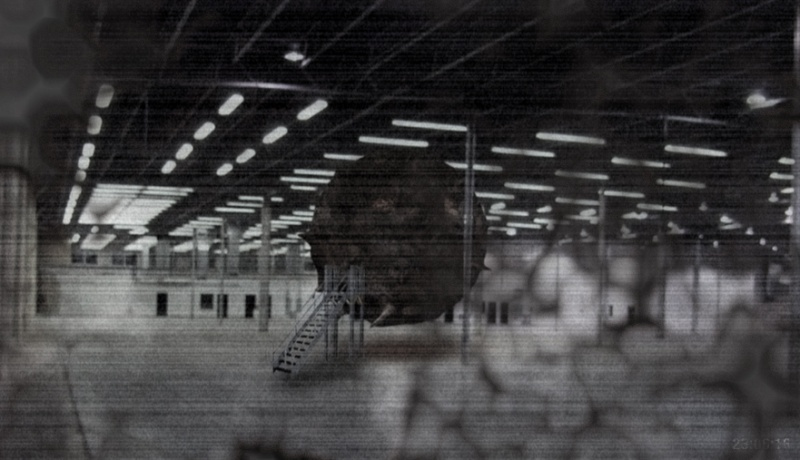

SCP-002 is to remain connected to a suitable power supply at all times, to keep it in what appears to be a recharging mode. In case of electrical outage, the emergency barrier between the o[...]
Teams including a minimum of two (2) members are required within 20 meters of SCP-002 or its containment area. Personnel should maintain physical contact with one another at all times to co[...]
No personnel below Level 3 are permitted within SCP-002. This requirement may be waived via written authorization from two (2) off-site Level 4 administrators. Command staff issued such a w[...]
SCP-002 resembles a tumorous, fleshy growth with a volume of roughly 60 m³ (or 2000 ft³). An iron valve hatch on one side leads to its interior, which appears to be a standard low-rent ap[...]
Refer to the Mulhausen Report [cross-ref:document00.023.603] for details related to object's discovery.
To date, subject has been responsible for the disappearances of seven personnel. It has also in its time at the facility further furnished itself with two lamps, a throw rug, a television, [...]
Mulhausen Report docid:00.023.603
The following is a brief report detailing the discovery of SCP-002
Subject was discovered in a small crater in northern Portugal where it struck the Earth from orbit. Encased in a shell of thick rock, the fleshy exterior of the object was exposed by [...]
A collection squad of SCP security personnel led by General Mulhausen was immediately dispatched to the area where they quickly secured the subject in a large container and performed [...]
During preparation for transport, four SCP security personnel were inexplicably drawn inside the object where they too immediately disappeared. Following inspection, it appeared as if[...]
[DATA EXPUNGED][DATA EXPUNGED]Following the termination of General Mulhausen, SCP-002 was re-secured by SCP staff and brought into special containment in [CLASSIFIED], where it currently resides. Staff with cleara[...]